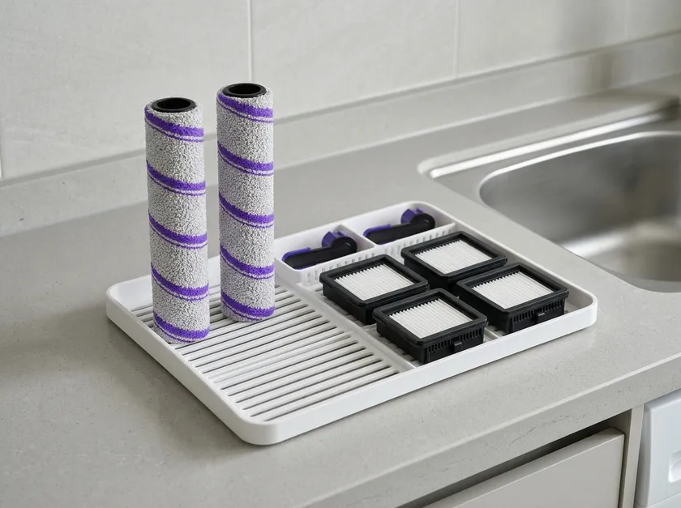
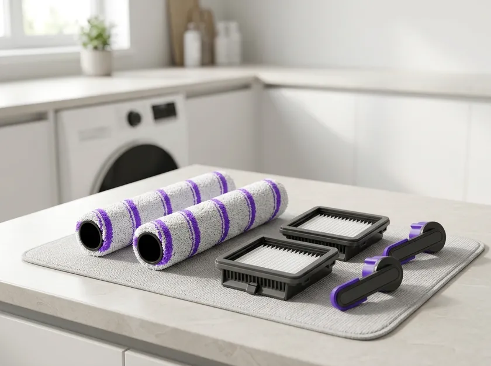
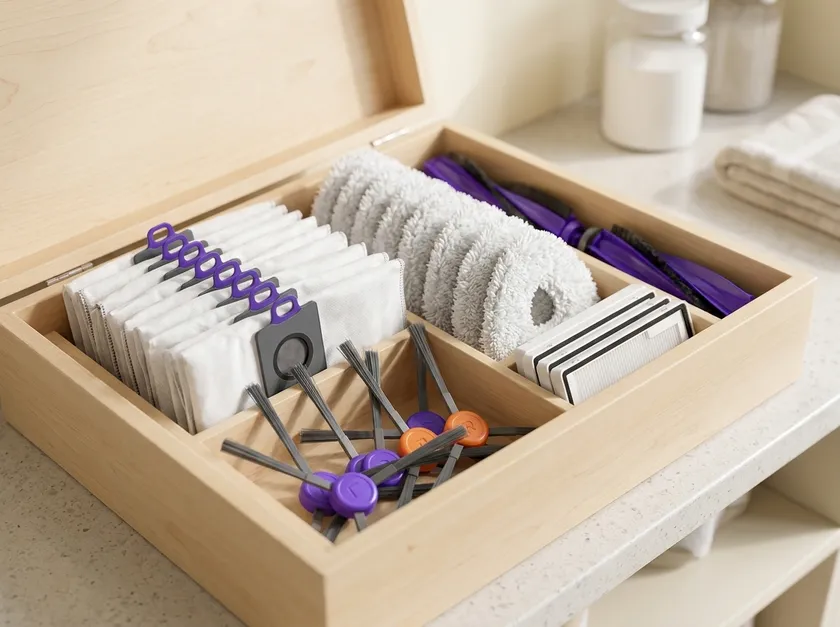

나르왈 (Narwal)
나르왈 S20 Pro 소모품 교체 주기｜아쿠아 물걸레 롤러·필터 냄새 잡는 1년 세트
글·구성: 제이상점 · 기종별 1:1 호환 실물 점검 · 교체 주기 비교표 · 스마트스토어 패키지 안내

핵심 관리 · 선택 체크포인트
- 요즘 집에서 겪기 쉬운 아이 흘린 우유나 주방 양념 자국을 한 번에 빨아들이는 스틱형 습식 물걸레 청소기 ‘나르왈 S20 Pro’에서 자가 세척 후에도 롤러 냄새나 흡입 소리 변화가 느껴지는 순간, 혹시 우리 집 로봇청소기 이야기 같으신가요?
- 나르왈 S20 Pro 구매 전 꼭 짚어볼 실물 부품 디테일: 호환 소모품을 고를 때 가장 먼저 살펴야 할 핵심은 퍼플 스트라이프 원통형 브러시 롤러와 오수통 상단 블랙 프레임 워셔블 헤파필터의 정밀한 체결감입니다.
- 나르왈 S20 Pro 소모품 교체 주기 & 전용 규격 한눈 비교표: 앱 잔여 수명 퍼센트(%)와 함께 아래 실물 마모 신호를 대조해 보시면 교체 타이밍을 놓치지 않고 나르왈 S20 Pro를 최적 상태로 유지할 수 있습니다.
- 단품 구매 vs 패키지 선택, 나르왈 S20 Pro 옵션 고르는 현실 기준: 습식 청소기는 ‘젖은 필터와 롤러를 말리는 동안 끼워 둘 예비 세트’ 유무가 악취 발생 여부를 가릅니다.
- 현재 대표 구성 기준가 45,400원대(옵션·할인 혜택에 따라 스토어 결제 화면 기준 상이)로 운영 중이니 우리 집 청소 주기와 남은 재고를 대조한 뒤 제이상점 나르왈 아쿠아 S20 Pro 물걸레 청소기 스마트스토어 상세 옵션에서 가장 실속 있는 구성을 선택해 보세요.
실물 부품 디테일 · 관리 구성 이미지




부품 규격 · 점검 기준표
| 핵심 소모품 구분 | 나르왈 S20 Pro 전용 규격 특징 | 체감 교체 신호 & 권장 관리 기준 |
|---|---|---|
| 퍼플 스트라이프 브러시 롤러 | 화이트·그레이 바탕 보라색 줄무늬 습식 롤러 | 유분기 많은 주방 청소 후 분리 세척·수직 건조하며 마른 예비 롤러 교대 |
| 오수통 상단 사각 헤파필터 | 수분·미세먼지 분리용 블랙 프레임 주름 필터 | 습기에 노출되므로 흐르는 물 세척 후 반드시 24시간 바짝 말려 교대 장착 |
| 아쿠아 시리즈 모델명 대조 | 본체 후면 ‘S20 Pro’ 영문 모델명 확인 | S10 Pro·S30 Pro와 혼동 방지를 위해 주문 전 정확한 시리즈 숫자 체크 |
💡 교체 주기가 겹치는 필터·브러시·물걸레·더스트백은 단품 배송비를 여러 번 내기보다 나르왈 S20 Pro 기간별 세트(3개월·6개월·1년)로 미리 구비해 두면 물세척 후 24시간 교대 건조까지 끊김 없이 관리할 수 있습니다.
자주 묻는 질문 (FAQ)
Q. 나르왈 로봇청소기용 세제나 필터와 S20 Pro 소모품이 호환되나요?
A. 호환되지 않습니다. S20 Pro는 스틱형 습식 아쿠아 물걸레 청소기 전용 원통형 롤러와 오수통 상단 전용 사각 필터만 장착되며 더스트백은 사용하지 않는 기종입니다.
Q. 집에 있는 아쿠아 청소기가 S20 Pro가 아니라 상위 S30 Pro 모델이라면 어디서 골라야 하나요?
A. 모델 숫자에 따라 롤러 브러시 엔드캡 규격이 다를 수 있으므로 S30 Pro 사용자분은 나르왈 아쿠아 S30 Pro 1년 소모품 패키지 (기종 구분 확인) 전용 페이지에서 정확한 규격을 선택해 주세요.
제이상점 1:1 검수 추천 패키지 · 구매 안내
메인 추천 구성
대표 구성 참고가 45,400원대 (옵션·쿠폰별 스마트스토어 결제 화면 기준)
1년 세트 (세제 미포함)6개월 세트 (세제 미포함)3개월 세트 (세제 미포함)
![[호환] 나르왈 S30 Pro 소모품 걸레 필터 1년 패키지](../../assets/img/narwal-s30-pro-product-8f81b6cd.webp)
함께 많이 찾는 보충 구성
대표 구성 참고가 49,400원대 (옵션·쿠폰별 스마트스토어 결제 화면 기준)
1년 세트 (세제 미포함)6개월 세트 (세제 미포함)3개월 세트 (세제 미포함)
☑️ 주문 전 확인해 두면 좋은 제이상점 안심 포인트
· 기종별 1:1 전용 규격 검수: 모델명·연식에 맞는 호환·정품 구성을 검수해 오주문 불안을 줄였습니다.
· 해외직배송 미리 주문 팁: 중국 구매대행·해외직배송 상품이므로 마지막 여분 1개를 꺼내 쓰는 시점에 개인통관고유부호와 함께 여유 있게 주문해 두시면 훨씬 경제적인 비용으로 끊김 없이 교체하실 수 있습니다.
· 기종별 1:1 전용 규격 검수: 모델명·연식에 맞는 호환·정품 구성을 검수해 오주문 불안을 줄였습니다.
· 해외직배송 미리 주문 팁: 중국 구매대행·해외직배송 상품이므로 마지막 여분 1개를 꺼내 쓰는 시점에 개인통관고유부호와 함께 여유 있게 주문해 두시면 훨씬 경제적인 비용으로 끊김 없이 교체하실 수 있습니다.
📖 더 많은 가정 내 사용 스토리와 상세 후기가 궁금하시다면
📱 네이버 블로그 모바일 원문 보기 ↗